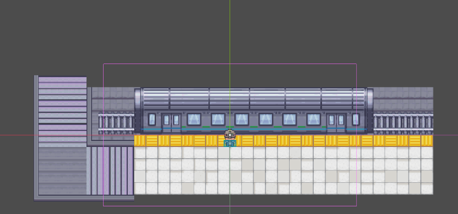
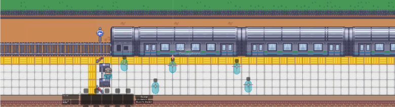
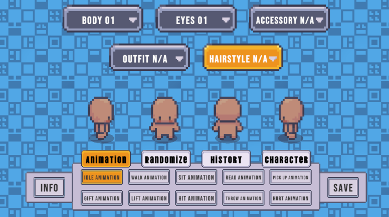
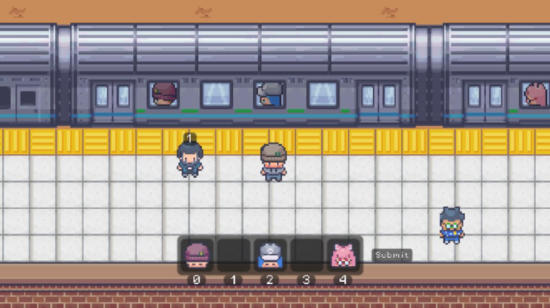
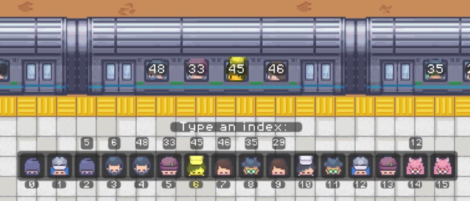
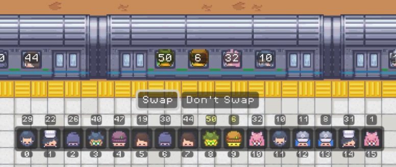
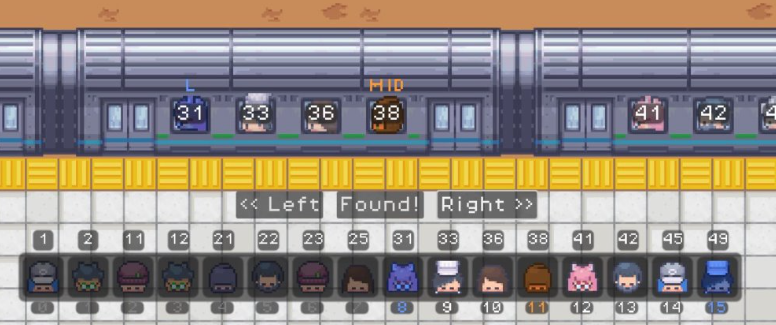
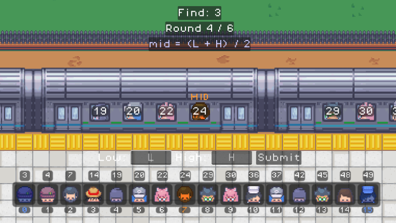

Daniel
Visual Assets
When developing the assets like the map or character nodes, I first created very basic versions and added to them as required. The map initially was very small and only got extended when the level required an expansion for the train asset. Other assets like passengers were added incrementally as they were needed as well.
For our first map, we attempted to emulate an underground subway. The map was super small and was eventually modified to take place outside. The train also started off with one car. Eventually, to accommodate for larger array sizes, we extended it up to 4 train cars with 16 indices.
Initial Map Design

Current Map Design

For our characters, we designed them using a character generator that came with the assets. Using this generator, we can create the player and NPCs by modifying skin, hair, eyes, outfits, and accessories. After selecting a body, eyes, accessories, outfit, and hairstyle, the character generator created a spritesheet for that character. Using the spritesheet, we were able to make the passenger sprites and animations for the main player. For any modifications on assets, I used Aseprite.
Character Generator

UI
At first, we wanted the user to interact directly with the object. In the case of our Array level, we wanted passengers to be moved in the train. We had to eventually scrap this idea as we decided levels would take too long and wouldn't accurately reflect the operation times for arrays, especially if we had really large sizes like 15+.
Because of this issue, we designed a smaller array that sits at the bottom of the user's screen. This made interacting with the array much simpler and similar to how a real array would work. Some additional features for our UI include highlighting hovered arrays, tooltips that display indices and passenger ticket numbers, and duplication of passengers in our train asset. Additionally, to make gameplay intuitive, each level has clear ways of interaction with assets. Based on feedback and multiple iterations, we eventually landed on the current UI, with minimal changes to fit the correct phase.
Most of the minimal changes were moving around buttons, or adding certain control nodes that can take user input to better match the design. For arrays, we have 4 phases mapped out. The first phase teaches users about indices because that's how you access elements inside. Since the user drags the passengers into the UI, phase 1 contains a submit button.
Phase 1

Phase 2 focuses on helping teach the user how to traverse and access elements in the array using what they learned in phase 1. In this phase, we prompt the user to type an index to search to find a specific target. We reveal the ticket number at the index typed and flash yellow if the wrong number is found and green if the correct one is found.
Phase 2

After learning how to traverse an array and getting comfortable with accessing elements using index numbers, we wanted users to learn how to sort. We ended up choosing bubble sort as our sorting algorithm as it would be easy to grasp for new players. For this phase, the two indices set to swap are highlighted yellow. At the end of one pass, if you swap everything correctly, the passenger is highlighted green. If you make 1 or more incorrect swaps, the array will flash red and go back to its initial state before the current pass's swaps, allowing you to try again until you've sorted the entire array.
Phase 3

After sorting the array, we contrast random searching on an unsorted array with the more efficient searching algorithm, binary search, on a sorted array. The UI for this phase highlights the left, mid, and right indices to make it easier for the user to complete the level. This level is split into two different difficulties. For the first difficulty, you just go left and right based on the target and number at mid. You learn about the low and high indices through the highlighted passengers.
Phase 4 Easy

After 3 passes, we increase the difficulty and require the user to input the new low and high indices for the next search. To make things easier for the user, we still highlight low and high, and we show how the mid is calculated at the top.
Phase 4 Difficult
